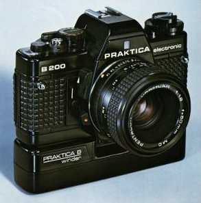

| Main | Bodies | Lenses | Accessories | M42x1 | Trivia | Contacts | About... | |
|
DDR Flag |
This page This is an unofficial page, it has no relation whatsoever with Pentacon GmbH, makers of Praktica cameras. It provides practical and historical information, about the Praktica B camera line. Although in less detail it also covers older Praktica/Pentacon models. This site is no longer mantained, visit the About... page for more information about it. | ||||||||||||||
Pentacon logo |
 Picture from the "PRAKTICA B-system" advertising brochure. |
The cameraThe first Praktica B was the Praktica B200 of 1978; it was presented at that year Photokina. Praktica cameras were made in East Germany by VEB Pentacon, one of the more respected European camera manufacturers. The Praktica B200 was the first Praktica with bayonet lens mount. The B200 was a very advanced camera, Japanese camera makers were using either mechanical or hybrid mechanic/electronic lens mounts. The Praktica used full electronic lens coupling. The Praktica B200 provided serious photographers with features that, even today, are difficult to find together in one camera:
| |||||||||||||
|
Updated 22/5/2004 |
A new line of lenses, called Prakticar, was produced for this new
camera mount. They were made by Carl Zeiss Jena, Pentacon, and Sigma.
Later the basic B200 body was improved with the Praktica BC1 that included
dedicated flash circuitry. With it's many variations the BC1 was one of
the most successful Praktica bayonet models. Pentacon doesn't have the money, nor the will, to develop a new SLR camera. (Pentacon could always contract Cosina to produce a camera with PB lens mount, other manufacturers have done this in order to mantain support for their manual focus lenses. But this will probably never happen).
| ||||||||||||||